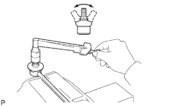

Stabilizer Bar Front Inspection |
| 1. Inspect Front Stabilizer Link Assembly LH |
 |
Inspect Ball Joint Rotation Condition
Install the nut to the stud of the front stabilizer link assembly LH.
Swing the stud back and forth 5 times, then turn it continuously at a rate of 3 to 5 seconds per turn, and measure the turning torque on the 5 turn.
Turn the stud.
Dust Cover Inspection
Check that the dust cover is not cracked and that there is no grease leakage.